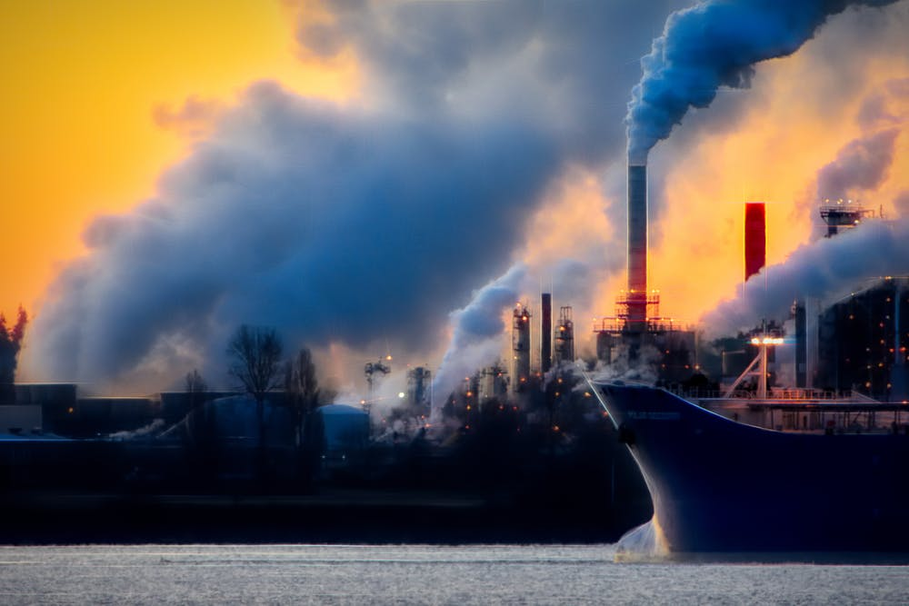

WHAT IS CARBON FOOTPRINT

Carbon footprint is the amount of carbon dioxide and other carbon compounds emitted due to the consumption of fossil fuels by a particular person, group, etc. Carbon dioxide is a greenhouse gas causing global warming. The other gases that also contribute to global warming are methane and ozone. Both are also taken into consideration when measuring one's carbon footprint. Methane and Ozone are converted into equivalent amounts of carbon dioxide that have the same effects on global warming.